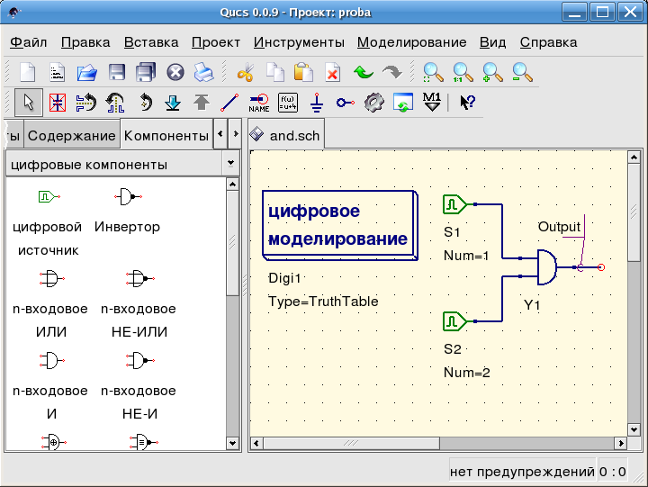

- Qucs -
Почти универсальный симулятор цепей
Быстрый старт в
цифровом моделировании
Qucs - это также графический интерфейс пользователя для выполнения цифрового
моделирования. Этот документ вкратце описывает, как для этого пользоваться Qucs.
Для цифрового моделирования Qucs использует программу FreeHDL
(http://www.freehdl.seul.org).
Поэтому пакет FreeHDL, а также компилятор GNU C++ должны быть установлены в
компьютере.
Нет большой разницы в выполнении аналогового или цифрового моделирования.
Поэтому после прочтения Быстрый старт в
аналоговом моделировании легко добиться, чтобы работало цифровое моделирование.
Давайте рассчитаем таблицу истинности простого логического элемента И. Выберите
цифровые компоненты в выпадающем списке вкладки компонентов слева и постройте
схему, изображенную на рис. 1. Блок цифрового моделирования можно найти среди
других блоков моделирования.
Цифровые источники S1 и S2 подключены ко входам, узел с
меткой Output является выходом. После выполнения моделирования открывается
страница показа данных. Поместите на нее диаграмму Таблица истинности и
вставьте переменную Output. Теперь показывается таблица истинности
двух-входового элемента И. Поздравления, первое цифровое моделирование сделано!

Рис. 1 - Главное окно Qucs
Таблица истинности - не единственный вид моделирования, который может выполнить Qucs.
Возможно также подать в схему случайный сигнал и посмотреть выходной сигнал во
временной диаграмме. Чтобы это сделать, нужно изменить параметр Type
блока моделирования на TimeList и в следующем параметре нужно ввести
продолжительность моделирования. Теперь у цифровых источников другой смысл:
они могут выдавать случайную последовательность битов, для чего им нужно задать
первый бит (низкий или высокий) и список моментов времени следующей смены состояния.
Обратите внимание, что этот список повторяется после конца. Поэтому, чтобы получить
тактовые импульсы с частотой 1 ГГц и скважностью 1:1, в этом списке должно быть
записано: 0.5ns; 0.5ns.
Для отображения результатов этого типа моделирования есть
временнАя диаграмма. В ней результаты всех выходных сигналов могут быть
изображены построчно в одной диаграмме. Так что успехов в этом деле...
Файловый компонент VHDL
Более сложные и более универсальные виды моделирования могут быть выполнены с помощью
компонента "файл VHDL". Этот компонент может быть взят из списка компонентов (раздел
"цифровые компоненты"). Тем не менее, рекомендуется следующий способ: файл VHDL д
олжен быть в составе проекта. Затем перейдите в просмотр содержимого проекта и нажмите
на имя файла. Войдя в область построения схем, поместите компонент VHDL.
Последний объектный блок в файле VHDL определяет интерфейс, то есть здесь должны быть
объявлены все входные и выходные выводы. Эти выводы показываются также на схемном
обозначении и могут быть соединены с остальной схемой. Во время моделирования исходный
код файла VHDL помещается в VHDL-файл верхнего уровня. Это следует учитывать,
поскольку это приводит к некоторым ограничениям. Например, имена объектов в VHDL-файле
должны отличаться от имен, уже данных подсхемам. (После моделирования полный исходный
код можно увидеть, нажав F6. Пользуйтесь этим, чтобы прочувствовать процедуру.)
наверх